17/10/2024 — Hai bệnh nhân đau ngực và RBBB: có ai bị nhồi máu cơ tim do tắc không?
Bản dịch tiếng Việt của bài "Two patients with chest pain and RBBB: do either have occlusion MI?" – Dr. Smith’s ECG Blog. Giữ nguyên toàn bộ 12 hình ảnh của bản gốc.
Tác giả: Jesse McLaren
Hai bệnh nhân ở độ tuổi
70 đến khoa cấp cứu (ED) vì đau ngực và RBBB. Một trong hai, cả hai, hay không ai
bị nhồi máu cơ tim do tắc (OMI)?

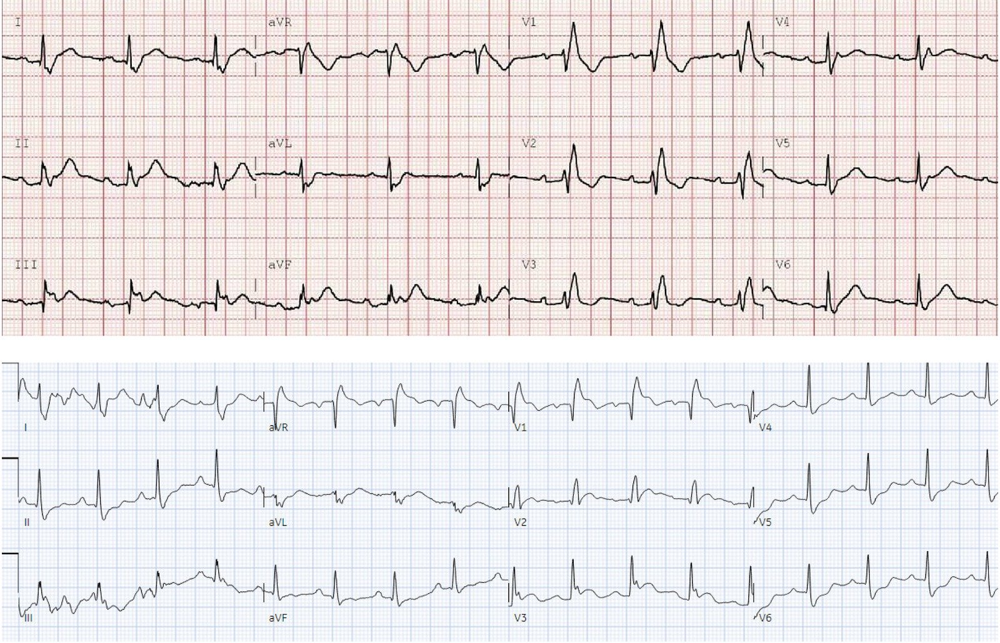
Bệnh nhân 1: một người 75 tuổi gọi nhân viên cấp cứu ngoài viện vì đau vai trái một ngày
rồi lan ra giữa ngực, đau tăng khi
hít thở sâu. Tiền sử có RBBB, không có tiền sử tim mạch nào khác,
nhưng không có điện tâm đồ cũ. Dấu hiệu sinh tồn bình thường, trừ độ bão hòa oxy
94%. Kết quả đọc bằng máy tính trước viện và tại ED là STEMI thành dưới:

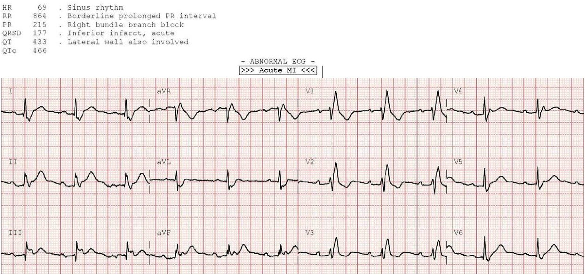
Có nhịp xoang
bình thường, blốc AV độ I và RBBB, trục bình thường và điện thế bình thường. Đúng như
dự đoán, các chuyển đạo trước với rsR’ có ST chênh xuống và sóng T đảo ngược thứ phát, ngược hướng và
tương xứng. Các chuyển đạo dưới có một
sóng dương nằm trong QRS, nhưng nếu đo đoạn ST sau
QRS thì không có chênh lên. Sóng T ở chuyển đạo dưới cao so với QRS
nhưng không có thay đổi soi gương (reciprocal) ở aVL, điều này khiến OMI thành dưới rất
khó xảy ra.

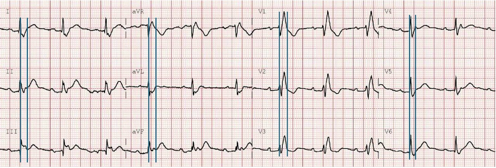
Bình luận của Smith: trước khi đọc bất cứ điều gì khác, với tôi ca này hét lên thuyên tắc phổi (PE). Thứ nhất, cơn đau bắt đầu ở vai; Thứ hai, đau kiểu màng phổi; Thứ ba, độ bão hòa oxy là 94%. Về điện tâm đồ, nó có thể là OMI, nhưng RBBB cũng là một manh mối cho thấy có thể là PE. Khi bệnh nhân đến, bắt buộc phải tìm PE trước khi kích hoạt phòng thông tim (cath lab). Tôi sẽ siêu âm tại giường để xem thất phải, tìm đường B như một nguyên nhân gây giảm oxy máu (điều này sẽ ủng hộ OMI và chống lại PE), và nếu vẫn còn nghi ngờ, chụp CT mạch phổi nhanh.
Ghi chép của nhân viên cấp cứu ngoài viện đặt
nghi vấn với STEMI: “EMS không đồng ý với máy theo dõi về báo động STEMI. So sánh điểm J
giữa các chuyển đạo thấy không có ST chênh lên hay chênh xuống đáng kể, với QRS
kéo dài do RBBB.” Kết quả đọc cuối cùng của khoa tim mạch cũng là RBBB
không có thay đổi thiếu máu cục bộ, nhưng kết quả này chưa có vào thời điểm đó. Với cả kết quả đọc bằng máy tính của EMS
lẫn của ED đều là ‘STEMI’, bác sĩ cấp cứu đã kích hoạt
phòng thông tim.
Động mạch vành bình thường,
troponin liên tiếp cũng vậy. X-quang ngực cho thấy xẹp phổi đáy phổi trái hoặc
đông đặc nghi viêm phổi, nên bệnh nhân được cho xuất viện với
kháng sinh. Mười ngày sau bệnh nhân quay lại vì đau ngực kiểu màng phổi nặng hơn.
CT ngực cho thấy thuyên tắc phổi bên trái và một ổ nhồi máu phổi mà trước đó
đã bị nhầm là viêm phổi.
Bệnh nhân 2: một người 70 tuổi gọi nhân viên cấp cứu ngoài viện vì đau ngực 3 ngày,
nặng hơn và khó thở trong một giờ qua. Tiền sử
có đái tháo đường và tăng huyết áp. Dấu hiệu sinh tồn bình thường. Kết quả đọc trước viện,
bằng máy tính tại ED, và kết quả đọc cuối cùng của khoa tim mạch đều là STEMI âm tính.

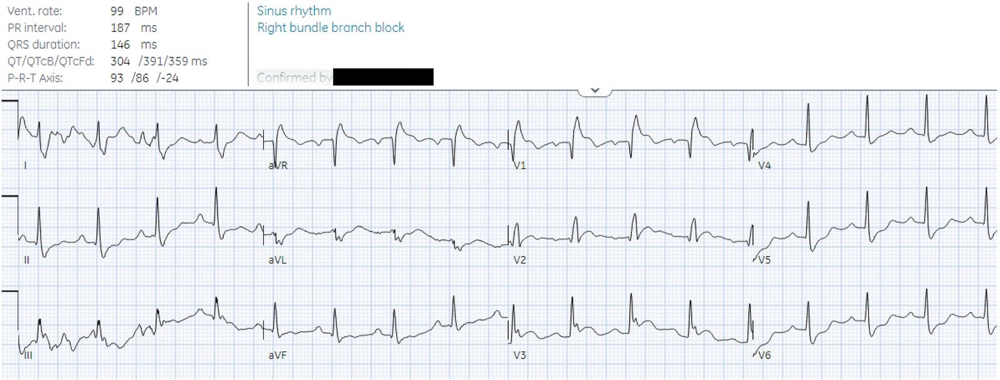
Có nhịp xoang
bình thường, RBBB, trục bình thường và điện thế bình thường. Có một ít nhiễu ở các
chuyển đạo chi và trôi đường nền ở các chuyển đạo trước tim. Nhưng dù vậy vẫn
có ST chênh lên đồng hướng rõ ở V1 và đoạn ST lồi kín đáo hơn ở V2-3,
với ST chênh xuống soi gương ở V5-6 (xoáy trước tim – precordial swirl):

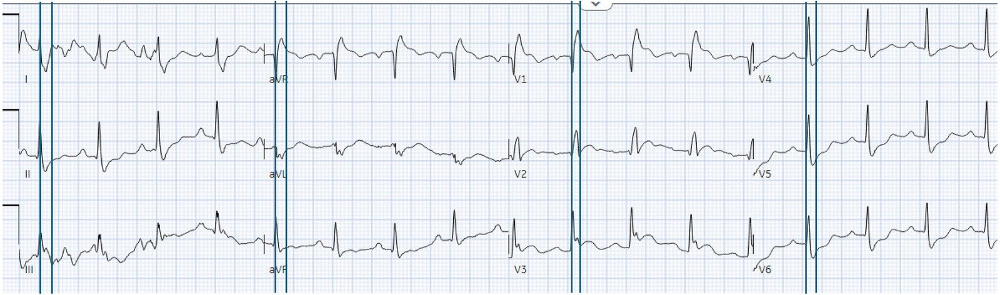
Điện tâm đồ nền từ một
lần khám vì tăng đường huyết 10 ngày trước, ở dưới, là bình thường:

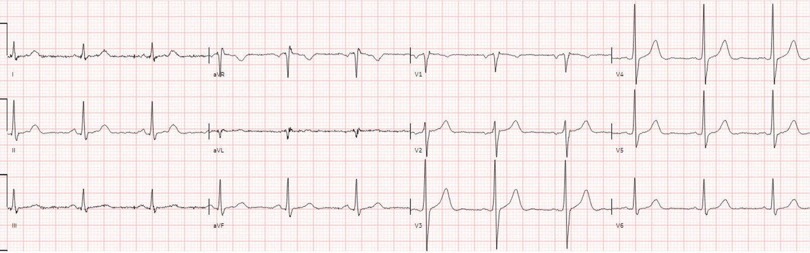
Vậy so với điện tâm đồ nền
có RBBB mới + xoáy trước tim, chẩn đoán tắc đoạn gần LAD. Nhưng vì điện tâm đồ trước viện
và tại ED đều ‘STEMI âm tính’, điện tâm đồ đã được ký duyệt và bệnh nhân
phải chờ khám.
Một giờ sau, troponin lần đầu trả về 1,500 ng/L (bình thường
<16 ở nữ và <26 ở nam), và điện tâm đồ được làm lại:

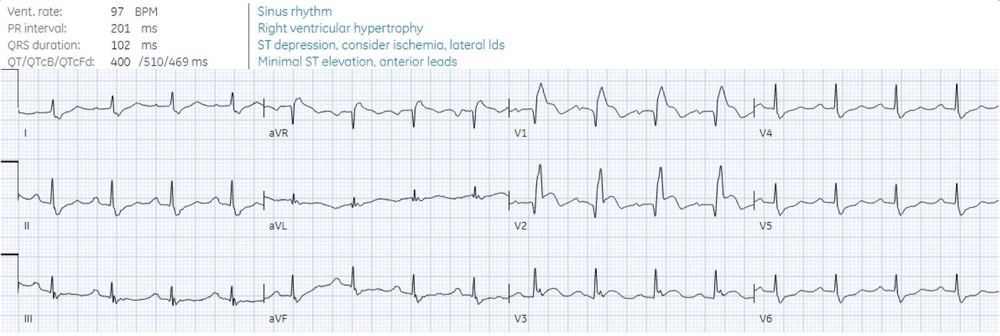
Lúc này có sóng Q
cấp ở V2 và ST chênh lên tăng dần, nay đã đạt tiêu chuẩn STEMI ở V1-2
nhưng vẫn không được dán nhãn STEMI. Máy tính thấy ST chênh xuống ở thành bên tại
V5-6 nhưng không thấy ST chênh lên ở V1-2 mà nó là hình soi gương (xoáy trước tim).
Bác sĩ cấp cứu
yêu cầu hội chẩn tim mạch khẩn, siêu âm tim tại giường cho thấy vô động thành trước, và
phòng thông tim được kích hoạt – với thời gian từ cửa đến thông tim là 4 giờ. Có tắc 100%
đoạn gần LAD với dòng chảy TIMI 0, và ngừng tim trong phòng thông tim. Troponin
đỉnh ở mức khổng lồ 500,000 ng/L, siêu âm tim cho thấy EF giảm còn 20%, và điện tâm đồ
theo dõi cho thấy hình thái phình thất trái với sóng Q thành trước và ST chênh lên kéo dài.
Bệnh nhân nằm viện
kéo dài và không qua khỏi.

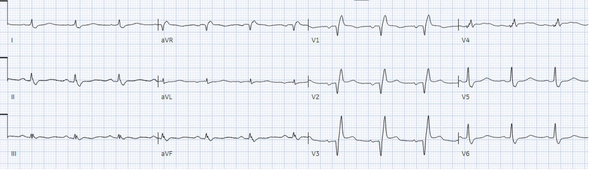
Mô hình STEMI hiện nay
gắn với các lần kích hoạt dương tính giả không cần thiết và có thể bỏ sót
các chẩn đoán khác, cùng với tái tưới máu chậm trễ và tăng tử vong ở các ca tắc kín đáo. Nhưng đọc điện tâm đồ nâng cao, để nhận ra các ca
STEMI dương tính giả và âm tính, là điều có thể học được. Tôi đã gửi điện tâm đồ ban đầu của cả hai
ca, không kèm bối cảnh nào, cho đồng nghiệp Mazen El-Baba, một bác sĩ nội trú cấp cứu năm cuối
quan tâm đến đọc điện tâm đồ, và anh ấy trả lời: “RBBB với blốc AV
độ I” cho ca thứ nhất (tức là không có tắc động mạch vành cấp), và “RBBB và
OMI chồng lên” cho ca thứ hai. Nhân viên cấp cứu ngoài viện của ca thứ nhất đã nhận ra
đó là STEMI dương tính giả, và trong ca
khác này một kỹ thuật viên tim mạch đã nhận ra RBBB kèm tắc LAD kín đáo.
AI được huấn luyện bởi chuyên gia có thể
đưa những tiến bộ này đến rộng rãi, và Queen of Hearts đã có thể tạo ra
khác biệt ở cả hai ca. Điện tâm đồ của bệnh nhân 1 được nhận định là Không phải OMI
với độ tin cậy cao, điều này có thể đã ngăn việc kích hoạt phòng thông tim không cần thiết
và khiến cân nhắc lại các nguyên nhân đáng lo khác của đau ngực. Điện tâm đồ của
bệnh nhân 2 được nhận định là OMI với độ tin cậy cao, điều này có thể đã giảm
chậm trễ tái tưới máu và cứu được cơ tim.

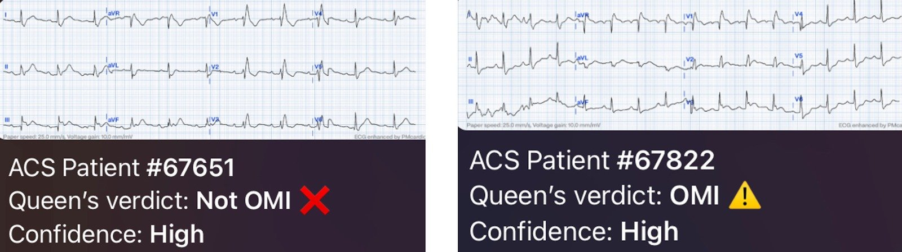
Bấm vào đây để đăng ký quyền truy cập Queen of Hearts.
Điều cần nhớ
1.
Ở bệnh nhân đau ngực cấp/khó thở,
RBBB có thể là cũ/không liên quan, hoặc mới do PE cấp hay
tắc đoạn gần LAD
2.
RBBB có thể gắn với
STEMI âm tính giả (ví dụ STE đồng hướng kín đáo do tắc LAD) và STEMI dương tính
giả (ví dụ nhầm QRS là đoạn ST)
3.
Xoáy
trước tim (STE thiếu máu cục bộ nguyên phát V1-2 với STD soi gương V5-6) có thể giúp
nhận ra tắc đoạn gần LAD
4.
Thay đổi soi gương ở aVL
rất nhạy với OMI thành dưới, nên OMI thành dưới khó xảy ra khi
không có thay đổi soi gương ở aVL
5.
Bác sĩ cần cân nhắc
ý kiến của nhân viên cấp cứu ngoài viện, vốn cung cấp thông tin lâm sàng giá trị, bao gồm cả
đọc điện tâm đồ
6. Những tiến bộ dựa trên bằng chứng trong đọc điện tâm đồ có thể được học ở mọi cấp độ nhân viên cấp cứu
7.
Queen of Hearts có thể nhận ra
các ca tắc kín đáo có nguy cơ chậm tái tưới máu, và STEMI dương tính giả có
nguy cơ kích hoạt phòng thông tim không cần thiết và bỏ sót các chẩn đoán khác

===================================
BÌNH LUẬN CỦA TÔI, bởi KEN GRAUER, MD (17/10/2024):
===================================
Ngày càng nhiều lần, chúng tôi đã đề cập đến câu hỏi lâm sàng — Chúng ta có thể chẩn đoán OMI cấp hiệu quả đến đâu ở bệnh nhân có RBBB? (Trong số các bài khác — Xem Bình luận của tôi ở cuối trang trong bài ngày 13 tháng Chín năm 2024 của Dr. Smith’s ECG Blog). Trong ca hôm nay — BS. McLaren thêm vài “khúc ngoặt” cho thử thách lâm sàng này.
- Để rõ ràng, trong Hình 1 — tôi đã ghi nhãn các điện tâm đồ ban đầu của cả hai bệnh nhân.
Bệnh nhân #1: Những dấu hiệu “đánh lừa” trên điện tâm đồ ban đầu …
Điện tâm đồ ban đầu của Bệnh nhân #1 — cho thấy nhịp xoang và RBBB (blốc nhánh phải — Right Bundle Branch Block).
- BS. McLaren vạch bằng các đường thẳng đứng điểm bắt đầu và kết thúc của phức bộ QRS ở mỗi chuyển đạo trong 12 chuyển đạo — và ông nhấn mạnh đúng rằng không có ST chênh lên. Nhưng tôi nghĩ điều này không dễ nhận ra.
Đường nền của đoạn ST là gì?
Sau nhiều thập kỷ chính thức giảng dạy đọc điện tâm đồ — tôi thường xuyên gặp câu hỏi lâm sàng tưởng như đơn giản này từ những người tôi dạy.
- Cuối cùng tôi đi đến kết luận rằng câu trả lời là — Còn tùy …
- Như tôi mô tả dưới đây trong Hình 2 — không có đồng thuận chung về việc dùng gì làm đường nền của đoạn ST, từ đó xác định độ lệch của đoạn ST (chênh lên hoặc chênh xuống).
- Vì không có đồng thuận — có thể dùng hoặc đường nền TP hoặc đường nền đoạn PR. Mặc dù tôi thường thích dùng đường nền đoạn PR hơn — phép đo đó sẽ sai khi có đoạn PR chênh xuống, như trên điện tâm đồ ban đầu của Bệnh nhân #1 (rõ nhất ở chuyển đạo II).
- Không chỉ có đoạn PR chênh xuống khá rõ ở một số chuyển đạo (các chuyển đạo I,II,III; aVF; V3,V4,V5,V6) — mà đường nền TP còn nghiêng, hạ thấp dần.Điều này khiến việc xác định có (hay không có) ST chênh lên trở nên đặc biệt khó khăn.
- Để dễ đánh giá — tôi đã thêm các đường ĐỎ chấm chấm nằm ngang bắt đầu từ điểm khởi đầu của đường nền TP ở các chuyển đạo I,II,III; aVF và V6 — và chúng ủng hộ nhận định của BS. McLaren rằng không có ST chênh lên trên điện tâm đồ của Bệnh nhân #1 này.
- Dù đã nói như trên — với bệnh sử đau ngực mới xuất hiện — tôi nghĩ sóng T ở các chuyển đạo II, aVF và V6 là tối cấp (tức là, “đầy đặn” không tương xứng so với biên độ QRS ở các chuyển đạo này — như các mũi tên ĐỎ làm nổi bật).
- ĐIỀU CỐT LÕI: Mặc dù tôi đồng ý với BS. McLaren rằng: i) Không có ST chênh lên trên điện tâm đồ của Bệnh nhân #1 này; và, ii) Việc không có ST chênh xuống soi gương ở chuyển đạo aVL là bằng chứng mạnh chống lại đây là OMI cấp — không thể phủ nhận rằng có những sóng T trông như tối cấp trên bản ghi này.
Suy đoán của tôi:
Bệnh nhân #1 được chứng minh là không có OMI cấp. Thay vào đó, ông được chẩn đoán viêm phổi — mà hóa ra là thuyên tắc phổi bên trái đã bị bỏ sót lúc đầu.
- PR chênh xuống — đã được chứng minh là một dấu hiệu điện tâm đồ tương đối thường gặp, đi kèm với PE không triệu chứng lâm sàng (Kudo và cs. — JACC 39(12): 2000-2004, 2002). PR chênh xuống rõ và thấy ở nhiều chuyển đạo trên bản ghi này.
- Mặc dù các dấu hiệu điện tâm đồ của PE cấp thường gồm ST chênh xuống/sóng T đảo ngược ở các chuyển đạo dưới và/hoặc trước — đôi khi có thể có ST chênh lên (Gheith và cs. — Cureus 14(9): e29249, 2022 — và — Siddiqa và cs. — Am J Case Reports 21: e927923-6, 2020).
- Khi xuất hiện — ST chênh lên như vậy thường thấy ở các chuyển đạo trước.
- Bệnh nhân #1 trong ca hôm nay không biểu hiện ST chênh lên trên điện tâm đồ ban đầu — nhưng có lẽ các sóng T tối cấp trên bản ghi này cũng là một biểu hiện của PE bị bỏ sót ở bệnh nhân này (nếu vậy — tôi sẽ kỳ vọng thấy các sóng T tối cấp này hết đi sau khi điều trị PE).

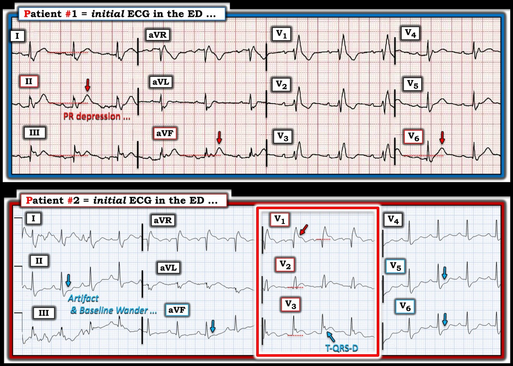
Bệnh nhân #2: RBBB và OMI cấp …
Điện tâm đồ ban đầu của Bệnh nhân #2 cũng cho thấy RBBB. Tôi sẽ làm nổi bật thêm vài đặc điểm.
- Có nhịp nhanh xoang với tần số ~100/phút. Như BS. Smith thường nhấn mạnh — nhịp nhanh xoang không phải là dấu hiệu thường gặp trong OMI cấp trừ khi có điều gì khác đang diễn ra (tức là, sốc tim). Trong ca hôm nay — nhịp nhanh xoang có thể đã là điềm báo cho cái chết sau cùng của bệnh nhân này.
- Theo BS. McLaren — có ST chênh lên ở các chuyển đạo trước V1,V2,V3 (trong hình chữ nhật ĐỎ). Bình thường với RBBB phải có ST-T chênh xuống ở các chuyển đạo trước — nên ở bệnh nhân đau ngực (CP) mới xuất hiện này, đây là dấu hiệu chẩn đoán OMI trước vách cấp (Xoáy trước tim “Swirl”, vì có ST chênh xuống ở các chuyển đạo V5,V6 — theo BS. McLaren). Mũi tên ĐỎ ở chuyển đạo V1 đánh dấu điểm kết thúc QRS và điểm bắt đầu của đoạn ST chênh lên rõ ràng.
- Lưu ý sóng Q nhồi máu lớn ở chuyển đạo V1, với sóng Q nhồi máu nhỏ hơn ở chuyển đạo kế cận V2.
- Cuối cùng — Lưu ý rằng cũng có T-QRS-D (biến dạng phần cuối QRS — Terminal QRS Distortion) ở chuyển đạo V3 (Xem Bình luận của tôi trong bài ngày 14 tháng Mười Một năm 2019 để ôn lại và minh họa các tiêu chuẩn T-QRS-D). Chúng ta không thường thấy T-QRS-D khi có RBBB — nhưng sự hiện diện của nó trên điện tâm đồ của Bệnh nhân #2 càng khẳng định thêm chẩn đoán OMI cấp.
- T.B. (P.S.): Việc đánh giá các chuyển đạo chi trên điện tâm đồ của Bệnh nhân #2 này rất khó — vì nhiễu đáng kể và trôi đường nền. Dù vậy — các mũi tên XANH chỉ ra điều mà tôi tin là ST chênh xuống soi gương, thêm một dấu hiệu nữa của tắc LAD đoạn gần trên điện tâm đồ của Bệnh nhân #2 này.

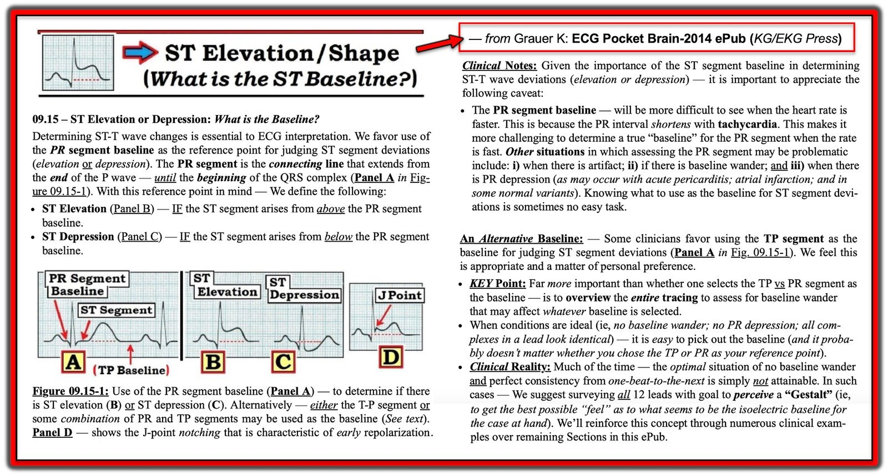